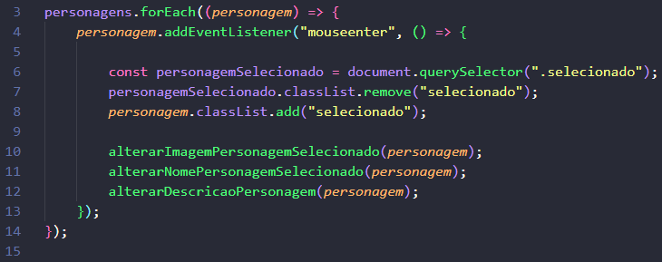
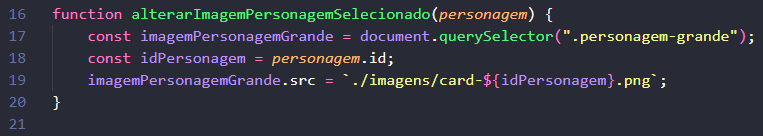
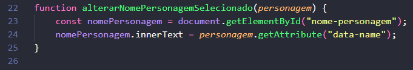
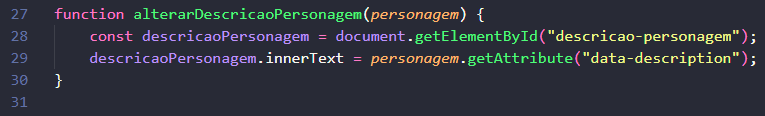

- Criar um tipo diferente de carrossel de imagens funcional usando JavaScript puro.
- Ao passar em cima de uma imagem de personagem, a imagem correspondente deve aparecer.
💾 Clique aqui para baixar o HTML, CSS e imagens.
👉 Clique no link acima e baixe tudo em sua pasta. O arquivo é .rar.
🖱 Clique com o botão direito em cima do arquivo e selecione "Extrair arquivos", depois clique em OK.
Após isso, uma pasta será criada com todos os arquivos.
👉 Um exercÃcio de lógica e manipulação do DOM com interações visuais.
👉 querySelectorAll retorna uma lista de todos os elementos que possuem a classe informada. Essa lista permite que você acesse cada elemento pelo Ãndice (como se fosse um array).
- Use forEach para percorrer os botões
👉 O método .forEach( ) é chamado na lista de elementos personagens (obtida na linha 1). Este método itera sobre cada elemento na lista e executa a arrow function para cada um. O parâmetro de cada iteração é chamado de personagem.
👉 Para cada elemento personagem, o método .addEventListener( ) é usado para anexar um manipulador de eventos. O evento escutado é 'mouseenter' (disparado quando o mouse entra na área do elemento).
👉 A variável personagemSelecionado é declarada com const e armazena o primeiro elemento HTML no documento que possui a classe CSS .selecionado. O método document.querySelector() é usado para encontrar esse elemento.
👉 O elemento que atualmente tem a classe .selecionado tem essa classe removida, usando a propriedade classList.remove(). Isso "desseleciona" o personagem que estava ativo anteriormente.
👉 O elemento personagem atual (sobre o qual o mouse acabou de passar) recebe a classe CSS .selecionado, usando a propriedade classList.add(). Isso o torna o novo personagem ativo/selecionado.
👉 Chamada de uma função externa chamada alterarImagemPersonagemSelecionado, que recebe o elemento personagem atual como argumento. Esta função será responsável por trocar a imagem principal com base no personagem selecionado.
👉 Chamada de uma função externa chamada alterarNomePersonagemSelecionado, que recebe o elemento personagem atual como argumento. Esta função será responsável por atualizar o nome do personagem na interface.
👉 Chamada de uma função externa chamada alterarDescricaoPersonagem, que recebe o elemento personagem atual como argumento. Esta função será responsável por atualizar a descrição do personagem na interface.
👉 Resumindo: O código percorre todos os personagens, adiciona um evento de mouse, remove a classe do anterior e aplica ao novo selecionado, atualizando imagem, nome e descrição por meio de funções externas.

👉 Declaração de uma função chamada alterarImagemPersonagemSelecionado, que foi chamada na linha 10. Ela recebe um parâmetro chamado personagem (o elemento HTML que foi clicado ou sobre o qual o mouse passou).
👉 A variável imagemPersonagemGrande é declarada com const e armazena o primeiro elemento HTML no documento que possui a classe CSS .personagem-grande. Este é o elemento img que exibe a imagem principal/grande do personagem.
👉 A variável idPersonagem é declarada com const e armazena o valor do atributo id do elemento personagem que foi passado como argumento. Este ID (ex: "ciclope", "wolverine") será usado para construir o nome do arquivo de imagem.
👉 O atributo src (fonte) do elemento imagemPersonagemGrande é atualizado. É utilizada uma Template Literal (crases `) para construir o caminho do arquivo da nova imagem: ./imagens/card-${idPersonagem}.png. Isso garante que a imagem exibida corresponda ao ID do personagem selecionado (ex: se o idPersonagem for "wolverine", o caminho será ./imagens/card-wolverine.png).
👉 Resumindo: a função troca a imagem grande do personagem na tela usando seu ID como referência para o nome do arquivo.

👉 Declaração de uma função chamada alterarNomePersonagemSelecionado, que foi chamada na linha 11. Ela recebe o parâmetro personagem (o elemento HTML que representa o personagem que foi selecionado).
👉 A variável nomePersonagem é declarada com const e armazena o elemento HTML com o ID 'nome-personagem', usando a função document.getElementById(). Este é o elemento onde o nome do personagem grande é exibido.
👉 A propriedade .innerText do elemento nomePersonagem é atualizada. O novo texto é obtido do elemento personagem usando o método .getAttribute('data-name'). Isso significa que o nome completo do personagem está armazenado em um atributo de dados (data attribute) HTML chamado data-name no elemento do personagem selecionado.

👉 Declaração de uma função chamada alterarDescricaoPersonagem, que foi chamada na linha 12. Ela recebe o parâmetro personagem (o elemento HTML do personagem que foi selecionado).
👉 A variável descricaoPersonagem é declarada com const e armazena o elemento HTML com o ID 'descricao-personagem', usando a função document.getElementById(). Este é o elemento onde o texto de descrição do personagem grande é exibido.
👉 A propriedade .innerText do elemento descricaoPersonagem é atualizada. O novo texto de descrição é obtido do elemento personagem usando o método .getAttribute('data-description'). Isso significa que a descrição do personagem está armazenada em um atributo de dados HTML chamado data-description no elemento do personagem selecionado.